Length of snow season
Description: Using this workflow it is possible to calculate the lenght of snow season.
GitHub repository: https://github.com/OphidiaBigData/ophidia-workflow-catalogue/tree/master/clipc/snow_off
OphidiaLab repository: ./workflows/snow_off/Lenght_snow_season.json
Arguments: (2) number of cores/tasks and "path/to/store/outputData"
Example: ./workflows/snow_off/Lenght_snow_season.json 6/home/oph-test/CLIPC
Number of tasks: 601
Workflow schema:
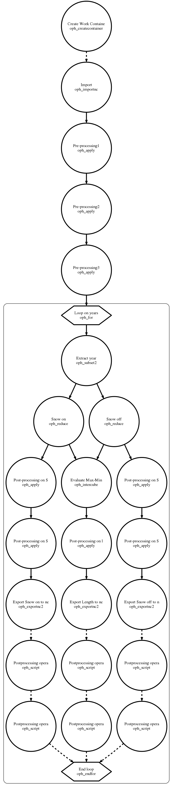
Workflow runtime:

Output (generated with Panoply): Three classes of files: i) duration of the snow season in days (starting from the first snow day after July, 1st to the last snow day till June, 30th of the next year); ii) first snow day (snow on); iii) last snow day (snow off).
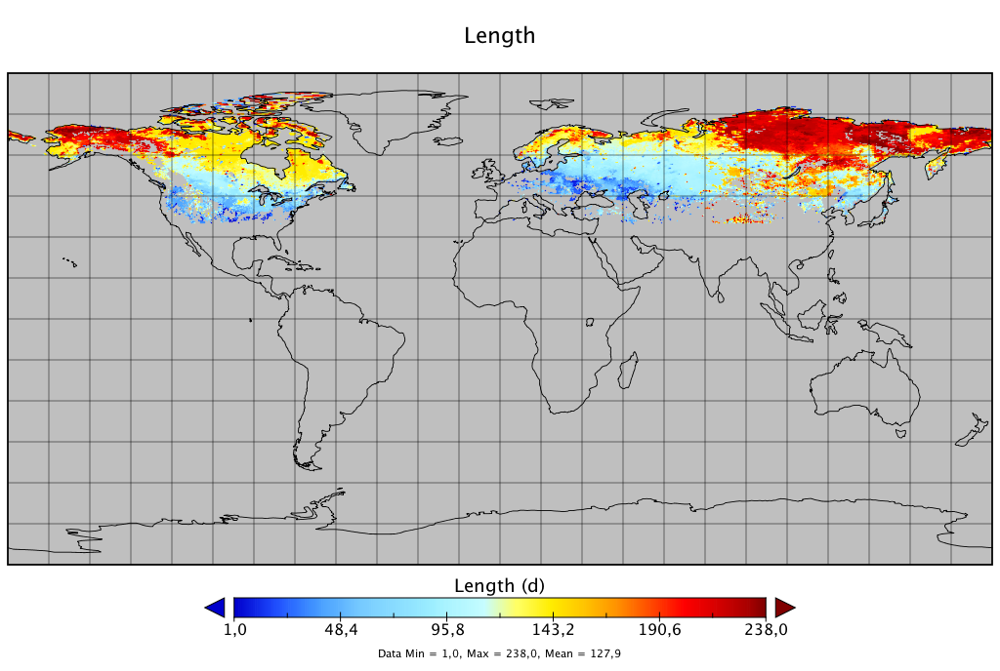
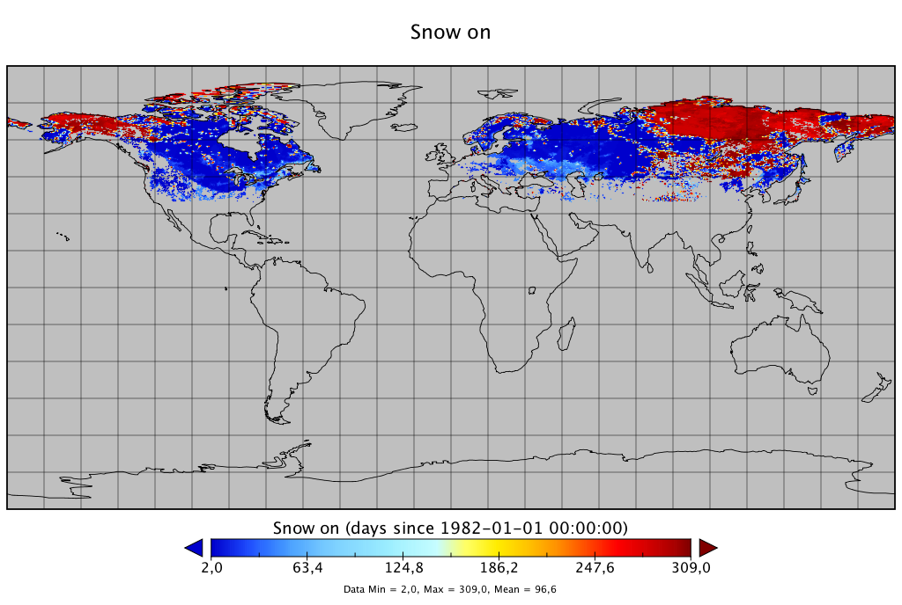
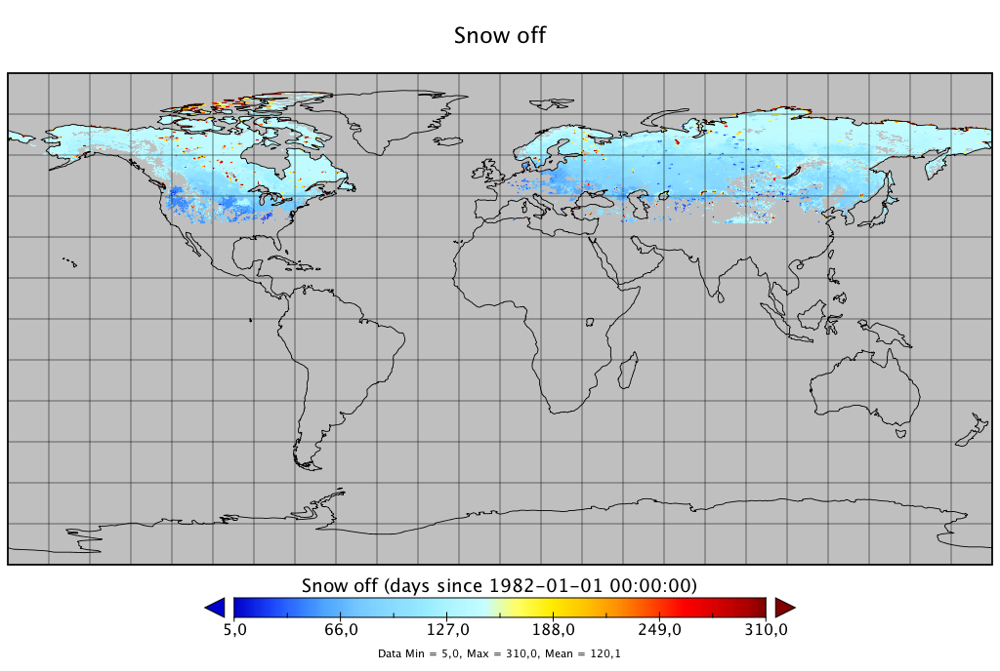
Reference:
A. D'Anca, C. Palazzo, D. Elia, S. Fiore, I. Bistinas, K. Böttcher, V. Bennett, G. Aloisio, "On the Use of In-Memory Analytics Workflows to Compute eScience Indicators from Large Climate Datasets" - in Proceedings of 1st Workshop on the Integration of Extreme Scale Computing and Big Data Management and Analytics (EBDMA 2017) within the International IEEE/ACM Conference CCGrid 2017 Madrid, Spain, May 14-17, 2017, DOI 10.1109/CCGRID.2017.132
Luojus, K. (2015): European Space Agency (ESA) GlobSnow Snow Water Equivalent (SWE) v2.0 products. Finnish Meteorological Institute, date of citation. http://catalogue.ceda.ac.uk/uuid/2f068226c7164a799cf202d1e7af07b2
Long-term monthly average of Snow Water Equivalent
Description: Using this workflow it is possible to calculate the Snow Water Equivalent long-term monthly average.
GitHub repository: https://github.com/OphidiaBigData/ophidia-workflow-catalogue/tree/master/clipc/snow_water_equivalent
OphidiaLab repository: ./workflows/snow_water_equivalent/SWE_monthly_average.json
Arguments: (2) number of cores/tasks and "path/to/store/outputData"
Example: ./workflows/snow_water_equivalent/SWE_monthly_average.json 6/home/oph-test/CLIPC
Number of tasks: 90
Workflow schema:
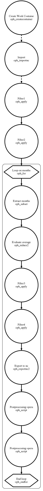
Workflow runtime:
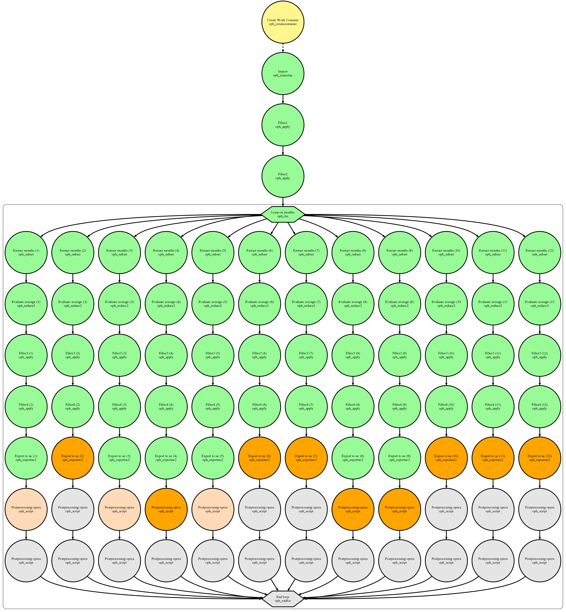
Output (generated with Panoply): 12 files, one for each month, with the climatological means.

Reference:
A. D'Anca, C. Palazzo, D. Elia, S. Fiore, I. Bistinas, K. Böttcher, V. Bennett, G. Aloisio, "On the Use of In-Memory Analytics Workflows to Compute eScience Indicators from Large Climate Datasets" - in Proceedings of 1st Workshop on the Integration of Extreme Scale Computing and Big Data Management and Analytics (EBDMA 2017) within the International IEEE/ACM Conference CCGrid 2017 Madrid, Spain, May 14-17, 2017, DOI 10.1109/CCGRID.2017.132
Luojus, K. (2015): European Space Agency (ESA) GlobSnow Snow Water Equivalent (SWE) v2.0 products. Finnish Meteorological Institute, date of citation. http://catalogue.ceda.ac.uk/uuid/2f068226c7164a799cf202d1e7af07b2
Monthly average of Sea Surface Temperature
Description: This workflow evaluates monthly mean sea surface temperature. It works on a datacube (SST variable).
GitHub repository: https://github.com/OphidiaBigData/ophidia-workflow-catalogue/tree/master/clipc/sea_surface_temperature
OphidiaLab repository: ./workflows/sea_surface_temperature/forGlobal_SST_Monthly_Average.json
Arguments: (2) number of cores/tasks and "path/to/store/outputData"
Example: ./workflows/sea_surface_temperature/forGlobal_SST_Monthly_Average.json 6/home/oph-test/CLIPC
Number of tasks: 76
Workflow schema:
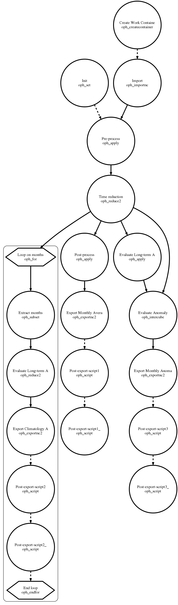
Workflow runtime:
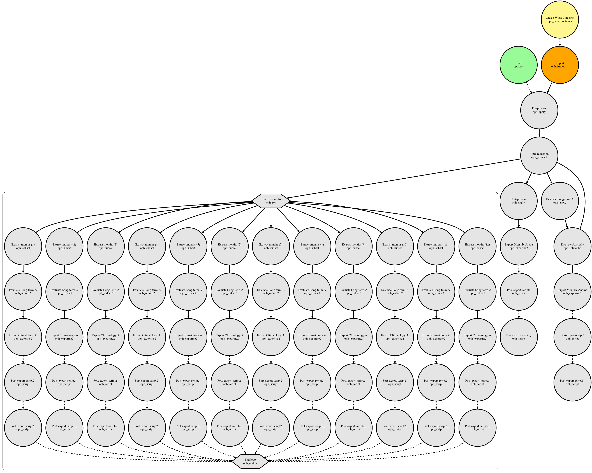
Output (generated with Panoply): Three classes of files: i) climatological means month by month (12 files); ii) single monthly data (1 file); iii) anomaly compared to the long-term average (1 file).
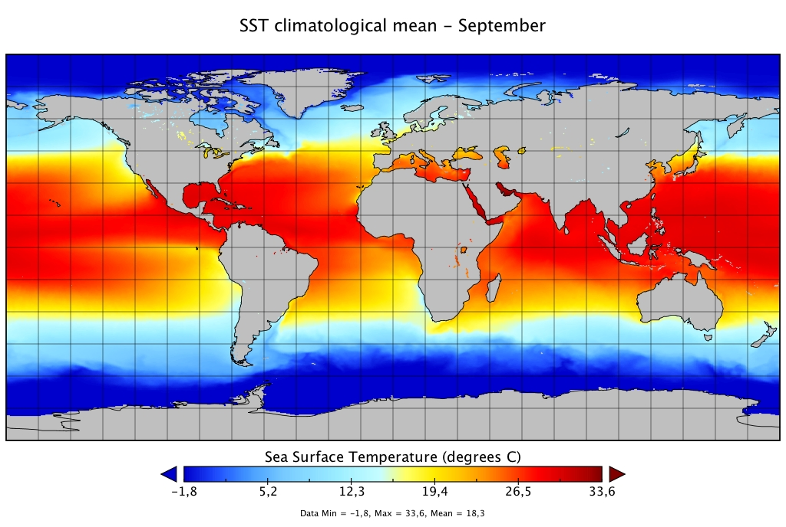
Reference:
A. D'Anca, C. Palazzo, D. Elia, S. Fiore, I. Bistinas, K. Böttcher, V. Bennett, G. Aloisio, "On the Use of In-Memory Analytics Workflows to Compute eScience Indicators from Large Climate Datasets" - in Proceedings of 1st Workshop on the Integration of Extreme Scale Computing and Big Data Management and Analytics (EBDMA 2017) within the International IEEE/ACM Conference CCGrid 2017 Madrid, Spain, May 14-17, 2017, DOI 10.1109/CCGRID.2017.132
Merchant, C.J.; Embury, O.; Roberts-Jones, J.; Fiedler, E.K.; Bulgin, C.E.; Corlett, G.K.; Good, S.; McLaren, A.; Rayner, N.A.; Donlon, C. (2014): ESA Sea Surface Temperature Climate Change Initiative (ESA SST CCI): Analysis long term product version 1.0. NERC Earth Observation Data Centre, 24 February 2014. doi:10.5285/878bef44-d32a-40cd-a02d-49b6286f0ea4. http://dx.doi.org/10.5285/878bef44-d32a-40cd-a02d-49b6286f0ea4
Daily Temperature Range
Description: The daily temperature range is the arithmetic difference between daily maximum and daily minimum temperature.
GitHub repository: https://github.com/OphidiaBigData/ophidia-workflow-catalogue/tree/master/dtr
OphidiaLab repository: ./workflows/daily_temperature_range/dtr_anomaly.json
Arguments: number of cores; model name; spatial subset; time subset in the past; time subset in the future; output grid
Example: ./dtr_anomaly.json 8 CMCC-CM -90:90|0:360 1970_2000 2070_2100 r360x180
Number of tasks: 65
Workflow schema:
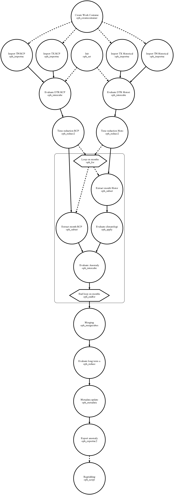
Workflow runtime:
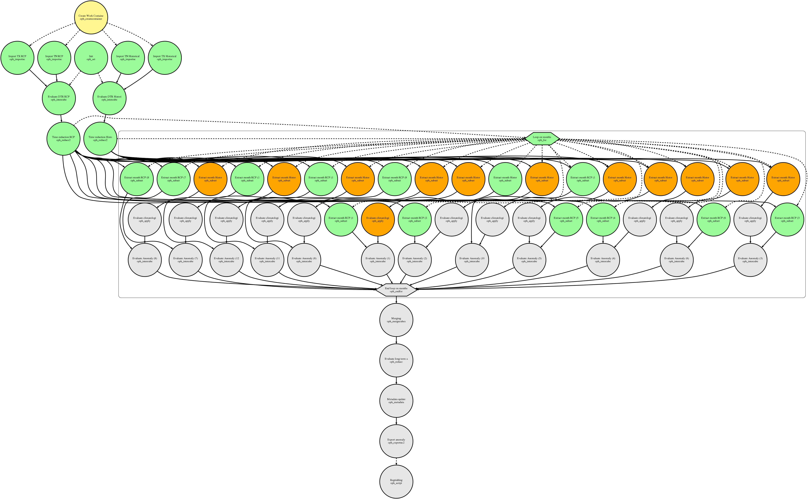
Output (generated with Panoply):
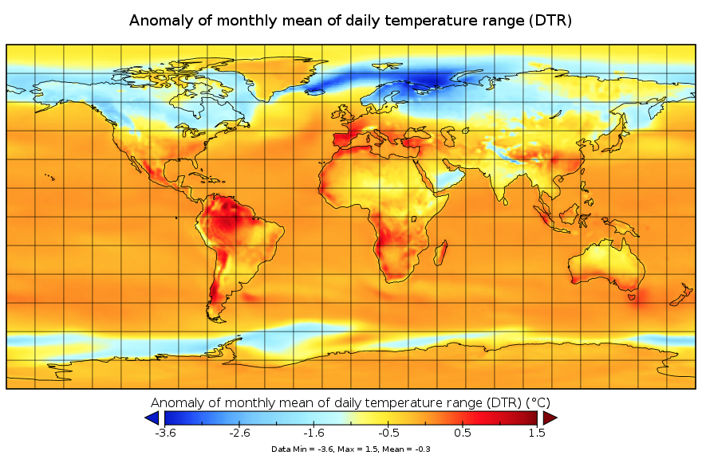
Precipitation Trend Analysis
Description: Precipitation trend analysis, on different spatial and temporal scales, has received notable attention during the past century due to its relations with global climate change stated by the scientific community. For this reason, a number of models for this atmospheric variable have been defined.
GitHub repository: https://github.com/OphidiaBigData/ophidia-workflow-catalogue/blob/master/indigo/precip_trend_analisys/optimized_precip_trend_analysis.json
OphidiaLab repository: ./workflows/precip_trend_analisys/optimized_precip_trend_analysis.json
Arguments: number of cores; model name; spatial subset; time subset in the past; time subset in the future; output grid; import type (optional); I/O server type (optional)
Example: ./optimized_precip_trend_analysis.json 2 CMCC-CM|CMCC-CMS rcp85 day 0.9 1976_2006 2071_2101 -90:90|0:360 r360x180
Number of tasks: 77
Workflow schema:
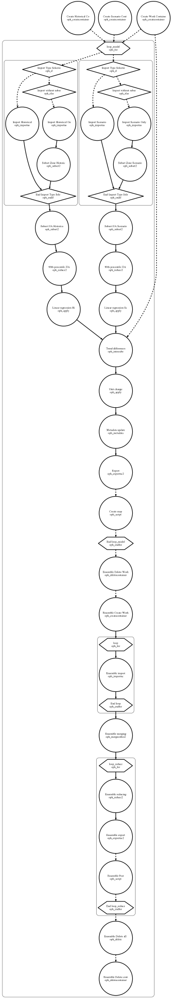
Workflow runtime:
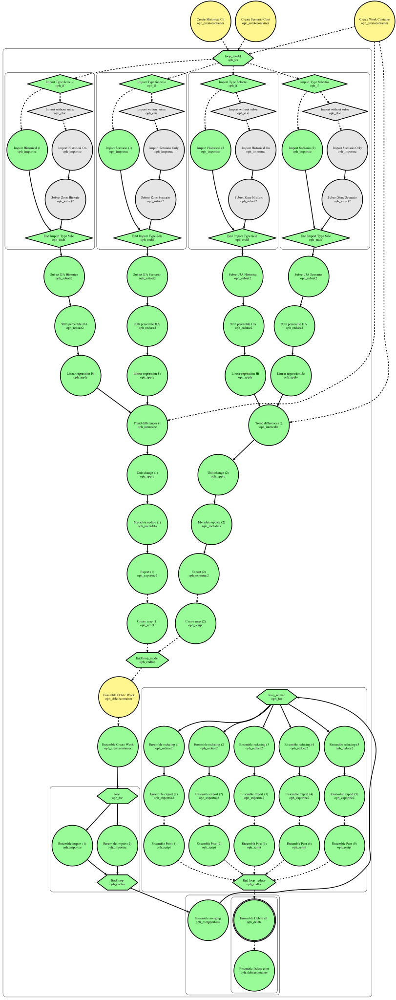
Output: 5 png files: maximum temperature, minimum temperature, average, standard deviation, variance
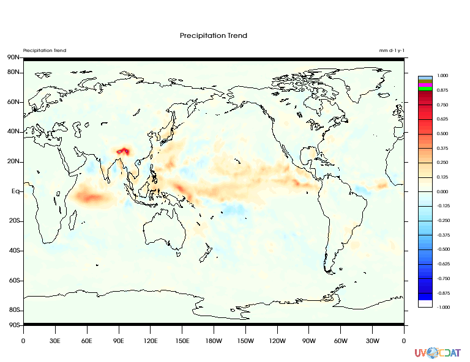
Reference: S. Fiore, M. Plociennik, C. Doutriaux, C. Palazzo, J. Boutte, T. Zok, D. Elia, M. Owsiak, A. D'Anca, Z. Shaheen, R. Bruno, M Fargetta, M. Caballer, G. Moltó , I. Blanquer, R. Barbera, M. David, G. Donvito, D. N. Williams, V. Anantharaj, D. Salomoni, G. Aloisio - "Distributed and cloud-based multi-model analytics experiments on large volumes of climate change data in the Earth System Grid Federation eco-system" - in Proceedings of Workshop "Big Data Challenges, Research, and Technologies in the Earth and Planetary Sciences" within the 2016 IEEE International Big Data Conference, pp. 2911-2918, 5-8 December 2016, Washington D.C., USA.